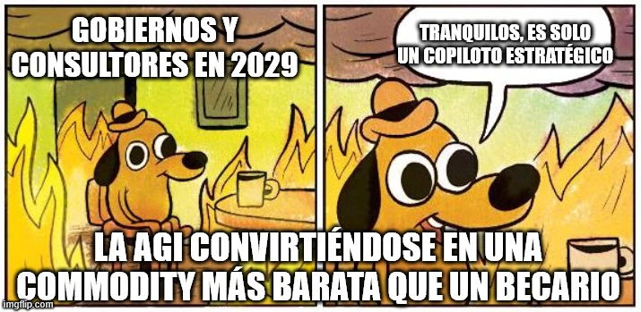

estrategIA #96 ·
Solo era un copiloto estratégico
El contexto
La historia veraniega imaginaba una ola de sustitución laboral que los responsables no habían preparado. El perro entre llamas conserva una explicación tranquilizadora mientras la IA general se abarata: «commodity» alude aquí a un recurso común, disponible y fácilmente intercambiable.
Publicado en: estrategIA #96 - HistorIAs veraniegas 2025 (4) - nadie preparó el arca: relato de un tsunami de despidos que todos ignoraron
Leer el texto de la imagen
GOBIERNOS Y CONSULTORES EN 2029 TRANQUILOS, ES SOLO UN COPILOTO ESTRATÉGICO LA AGI CONVIRTIÉNDOSE EN UNA COMMODITY MÁS BARATA QUE UN BECARIO
Marca de la herramienta visible en el original: imgflip.com.